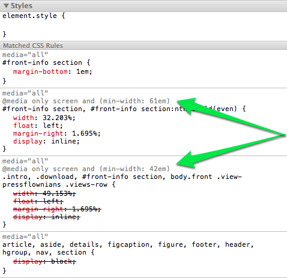
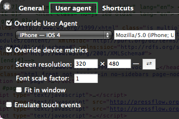
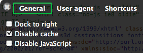
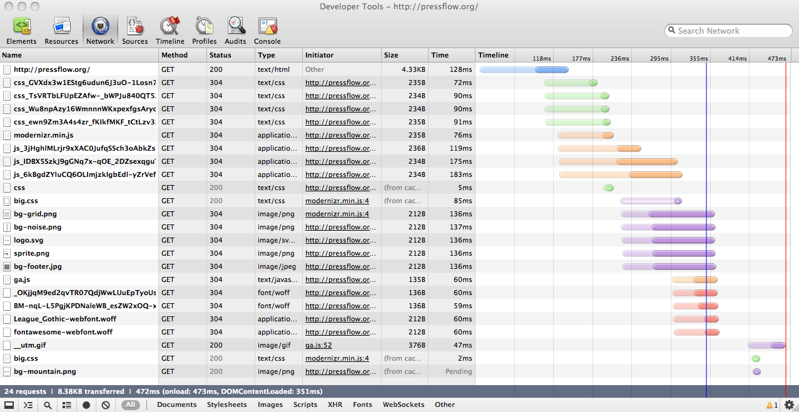
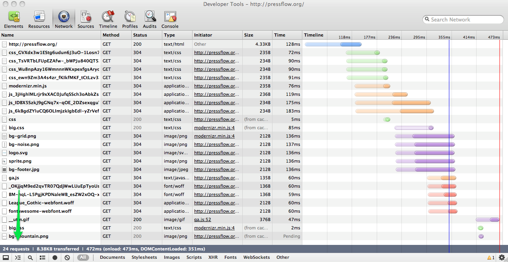
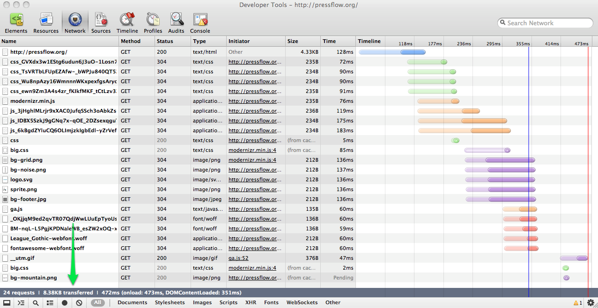
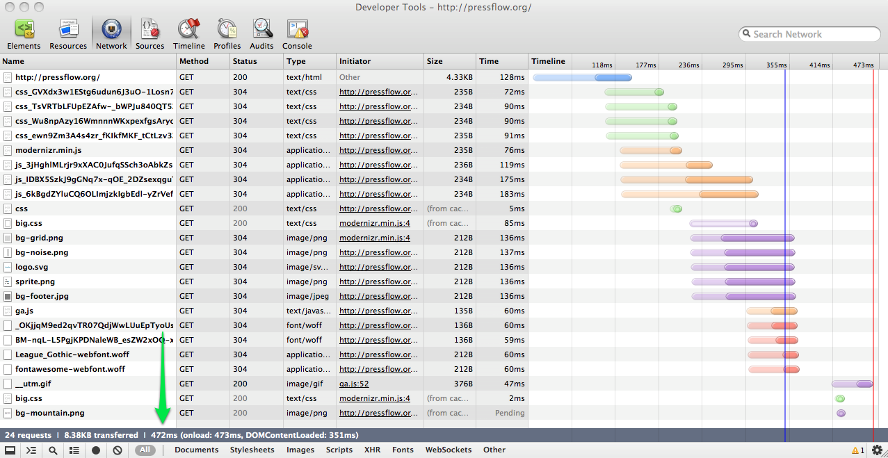
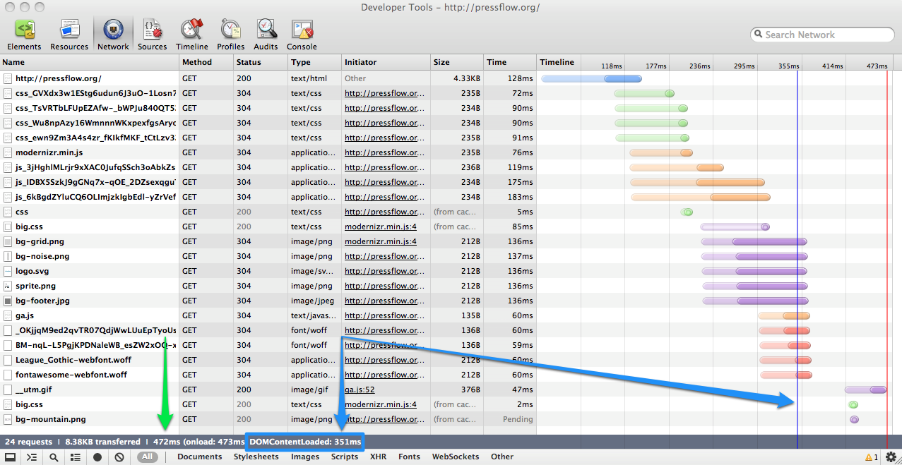

High Performance Theming
DrupalCon Munich 2012
Presented by Chris Ruppel
Theme development
How can I build/debug faster?
Browser Development Tools
(devtools)
History
In the early days you downloaded extensions
Now it's included and browsers share features.
Why? They all want the Open Web to win.
Browser Makers
want to hear from YOU
Chrome devtools protips
Easily check the media query that supplies each style

Spoof user-agent and dimensions

Disable all caching
(while the devtools are open)

Great for testing network waterfalls
Network waterfalls
The first step to debug load-time issues





Users start to "feel" like the webpage has loaded.
jQuery does not execute until this event has occurred.
More info
Web Performance
How do I make pages load faster?
Warning:
Not everything in this section is universal
You must act on problems that you discover on each site that you test, not according to "best practices"
Applying optimization where none is needed can actually slow your site down in some cases
JavaScript Tools
♥.¸¸.•°*☆ -=(>^_^)> \(^_^\) ☆*°•.¸¸.♥
JS mich
SouthStreet
by Filament Group
eCSSential
Problem: CSS is loaded when it is not needed.
Sometimes it will never be used by the device in question. It's just dead weight.
Example: mobile phone downloading CSS with
@media (min-width: 1400px)
Solution: eCSSential will only load CSS that is needed immediately. It lazy-loads CSS that might be used.
Picturefill
Problen: we need different images for different device contexts. Affects usability and page speed.
Developed to explore responsive images before a native browser implementation emerges.
Picturefill in Drupal
D7 - Module available at http://drupal.org/project/resp_img
D8 - Core implementation WIP http://drupal.org/node/1170478
Drupal 8 efforts are helping influence the formation of this web standard
REMOVE EVERYTHING AFTER THIS BEFORE PRESENTING.
Vertical Slides
Slides can be nested inside of other slides,
try pressing down.
Basement Level 1
Press down or up to navigate.
Basement Level 2
Cornify

Basement Level 3
That's it, time to go back up.
Holistic Overview
Press ESC to enter the slide overview!
Works in Mobile Safari
Try it out! You can swipe through the slides pinch your way to the overview.
Transition Styles
You can select from different transitions, like:
Marvelous Unordered List
- No order here
- Or here
- Or here
- Or here
Fantastic Ordered List
- One is smaller than...
- Two is smaller than...
- Three!
Global State
Set data-state="something" on a slide and "something"
will be added as a class to the document element when the slide is open. This let's you
apply broader style changes, like switching the background.
"blackout"
"soothe"
Custom Events
Additionally custom events can be triggered on a per slide basis by binding to the data-state name.
Reveal.addEventListener( 'customevent', function() {
alert( '"customevent" has fired' );
} );
Clever Quotes
These guys come in two forms, inline:
The nice thing about standards is that there are so many to choose from
and block:
For years there has been a theory that millions of monkeys typing at random on millions of typewriters would reproduce the entire works of Shakespeare. The Internet has proven this theory to be untrue.
Pretty Code
var supports3DTransforms = document.body.style['webkitPerspective'] !== undefined ||
document.body.style['MozPerspective'] !== undefined ||
document.body.style['perspective'] !== undefined;
function linkify( selector ) {
if( supports3DTransforms ) {
var nodes = document.querySelectorAll( selector );
for( var i = 0, len = nodes.length; i < len; i++ ) {
var node = nodes[i];
if( !node.className || !node.className.match( /roll/g ) ) {
node.className += ' roll';
node.innerHTML = '' + node.innerHTML + '';
}
};
}
}
linkify( 'a' );
Courtesy of highlight.js.
Intergalactic Interconnections
You can link between slides internally,
like this.
Fragmented Views
Hit the next arrow...
... to step through ...
any type- of view
- fragments
Spectacular image!